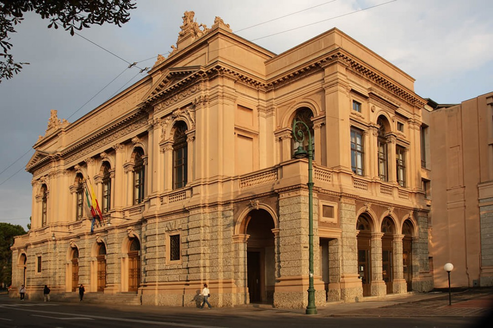
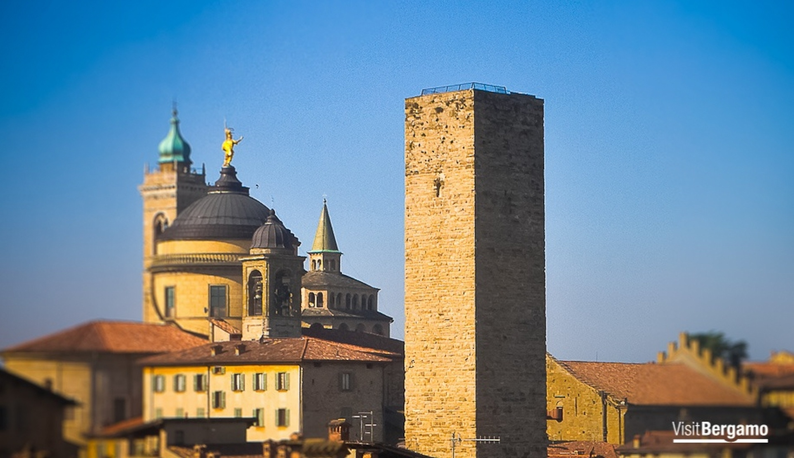
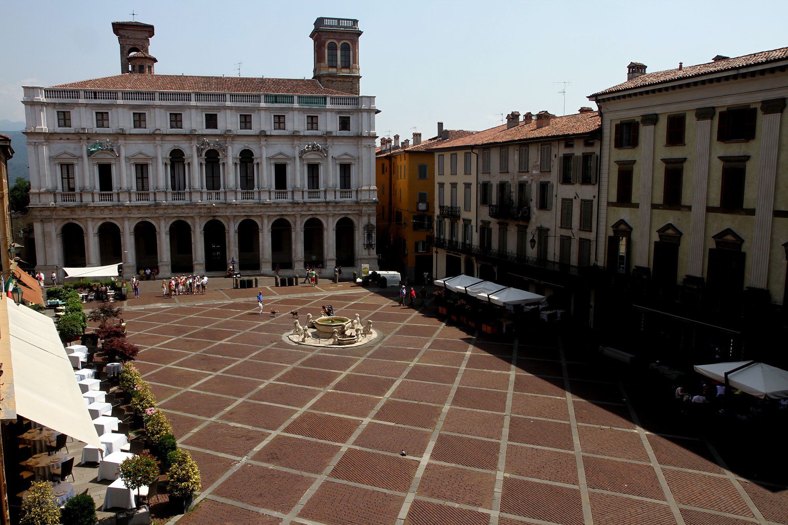
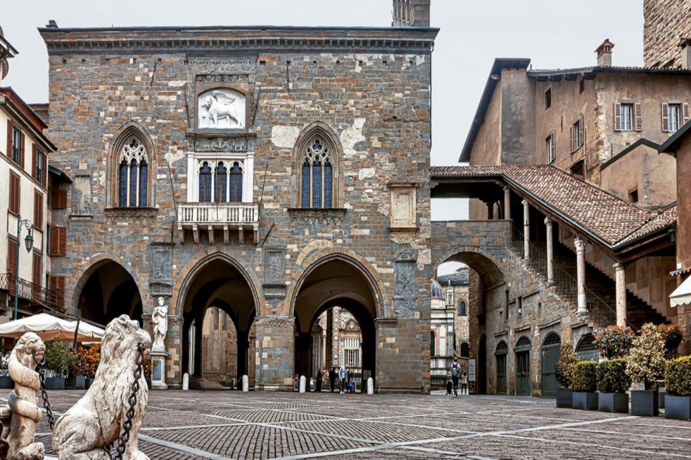

Teatro Donizzetti

The Teatro Donizetti is an opera house in Bergamo, Italy. Built in the 1780s using a design by architect Giovanni Francesco Lucchini, the theatre was originally referred to as either the Teatro Nuovo or Teatro di Fiera. The first opera to be mounted at the theatre, Giuseppe Sarti's Medonte, re di Epiro, was in 1784 while the opera house was still under construction. The official opening of the house, under the name the Teatro Riccardi, did not occur until 24 August 1791 with a production of Pietro Metastasio's Didone abbandonata set to music by multiple composers, including Ferdinando Bertoni, Giacomo Rampini, Johann Gottlieb Naumann, Giuseppe Gazzaniga, and Giovanni Paisiello.
In 1797 the original theatre was destroyed by a fire, possibly by arson. Lucchini was contracted again to design a new structure to replace the old one and the new house opened on 30 June 1800. The structure uses a horseshoe shape with three tiers of boxes and two galleries.
In 1897 the name of the theatre was changed to the Teatro Gaetano Donizetti (now shortened to Teatro Donizetti) on the occasion of the centenary of the composer's birth. Donizetti was born in Bergamo's Borgo Canale quarter and his first opera, Il Pigmalione (composed 1816), was given its world premiere at the theatre on 13 October 1960.
Torre del Gombito

The Torre del Gombito is a historical monument located in the centre of the town of Bergamo in Italy. Built in the 12th century, the Tower is the highest tower in the town which makes it a popular tourist attraction for visitors to the place. Make time to explore the medieval style architecture of the Torre del Gombito which is constructed from sandstone blocks and has undergone several restorations over the centuries. You can reach the top of the Tower by climbing the 263 odd steps that open to the terrace from where you can take in the panoramic views of the beautiful town below.
Torre del Gombito

Countless historical visions that will remain on printed on your mind converge magically in a single spot, the square of Piazza Vecchia, also known as Bergamo's living room. There is more than one way to reach it.
By going through its many medieval roads you will notice how easily they tie together. You will notice different viewing perspectives from several points that highlight how ancient buildings look.
First of all, there is the Contarini Fountain that to this day emanates a XVIIth century beauty and makes quite a spectacle in the middle of the square with its mild colors.
Not far from there you stumble upon elegant and imposing buildings that evoke silent memories of a distant past. Palazzo Nuovo displays harmonious Renaissance style outlines alongside Palazzo del Podestà, Palazzo della Ragione and the Civic Tower.
Stop at a historical café and take a pleasant break while you watch life passing by at a slower pace. The magic of this ancient town is everywhere, away from urban noise.
You will surely remember the elegance of such an inspiring Venetian-style atmosphere.
Torre del Gombito

Countless historical visions that will remain on printed on your mind converge magically in a single spot, the square of Piazza Vecchia, also known as Bergamo's living room. There is more than one way to reach it.
By going through its many medieval roads you will notice how easily they tie together. You will notice different viewing perspectives from several points that highlight how ancient buildings look.
First of all, there is the Contarini Fountain that to this day emanates a XVIIth century beauty and makes quite a spectacle in the middle of the square with its mild colors.
Not far from there you stumble upon elegant and imposing buildings that evoke silent memories of a distant past. Palazzo Nuovo displays harmonious Renaissance style outlines alongside Palazzo del Podestà, Palazzo della Ragione and the Civic Tower.
Stop at a historical café and take a pleasant break while you watch life passing by at a slower pace. The magic of this ancient town is everywhere, away from urban noise.
You will surely remember the elegance of such an inspiring Venetian-style atmosphere.